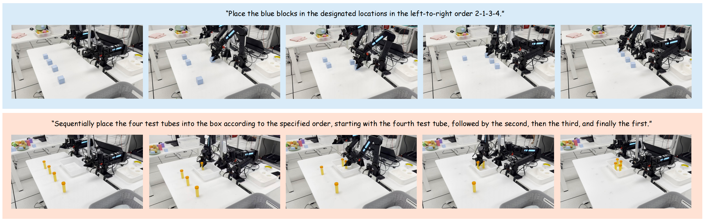
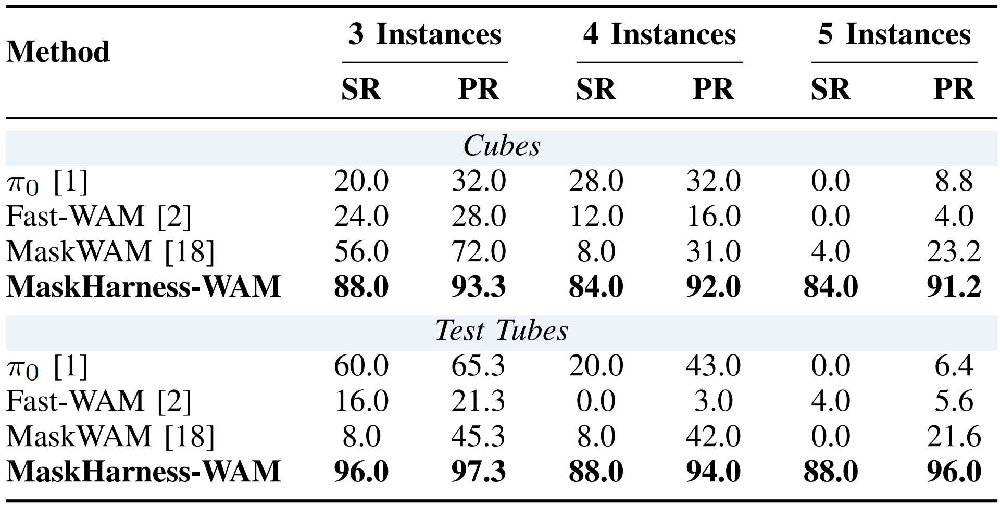

Main Results
We evaluate MaskHarness-WAM on a real ARX dual-arm 7-DoF robotic platform. The evaluation focuses on two sequential manipulation tasks: 1) block and 2) test-tube. For both tasks, the training set contains only 4-instance demonstrations. Each 4-instance task admits 24 possible execution orders. The training set covers 18 orders for blocks and 15 orders for test tubes, while the remaining orders are reserved for evaluation.
Across all six settings, MaskHarness-WAM achieves the highest SR and PR while maintaining stable performance across different instance scales. For block tasks, SR reaches 88.0%, 84.0%, and 84.0% under the 3-, 4-, and 5-instance settings, respectively; for test tube tasks, SR reaches 96.0%, 88.0%, and 88.0%. The lowest PR across the six settings is 91.2%. Performance therefore holds up under both task-scale variations and unseen execution orders.

